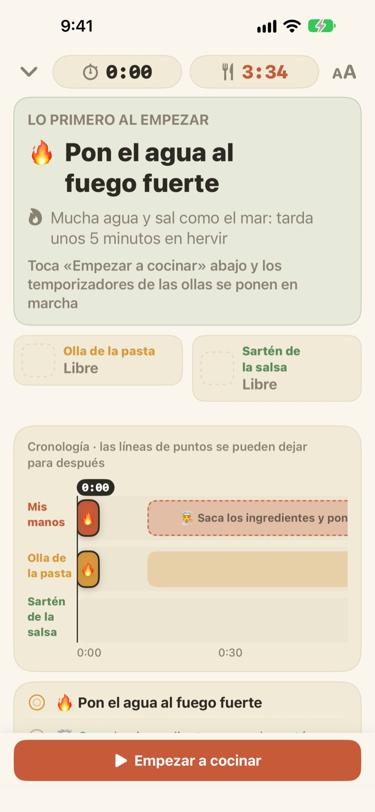
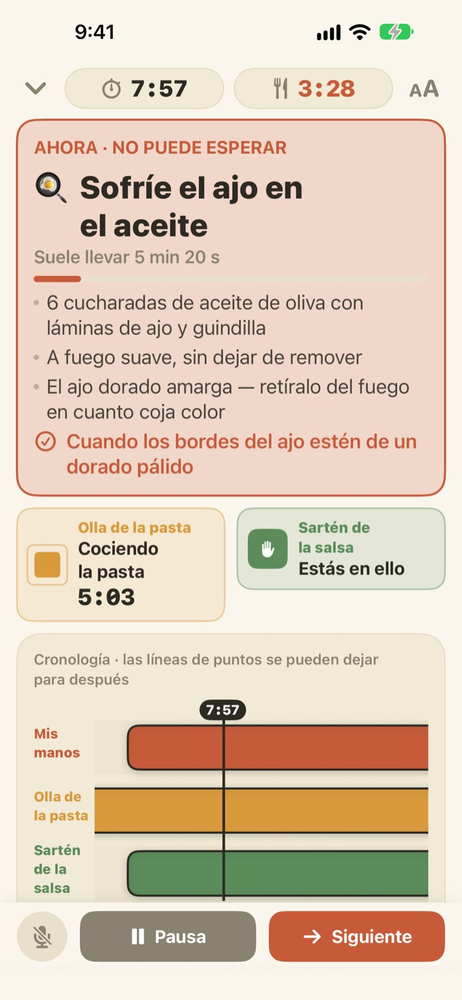
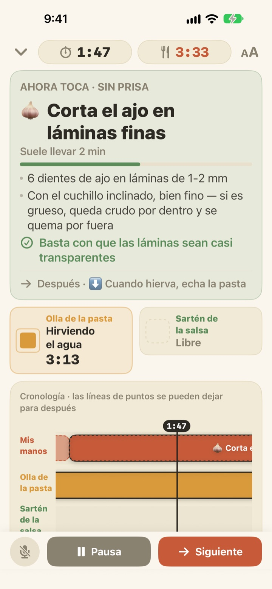
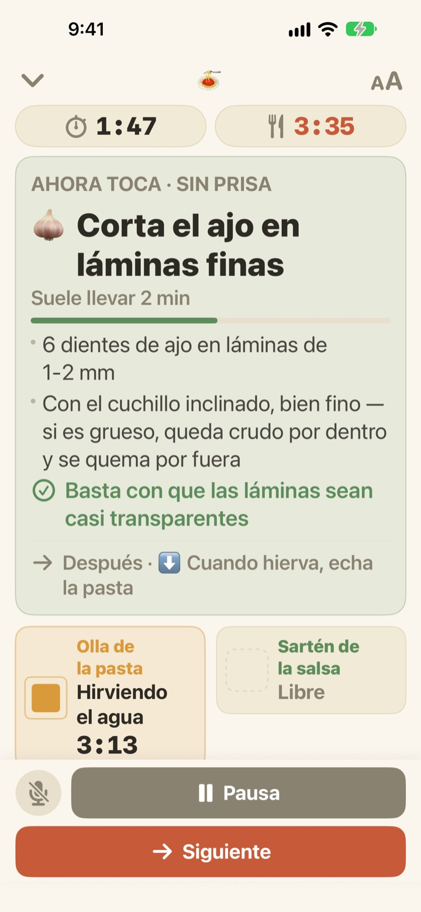

La pasta hierve.
La salsa, mientras tanto, también.
Cuando dos ollas van a ritmos distintos, Geusaie te muestra en grande lo único que tus manos tienen que hacer ahora. La salsa se programa hacia atrás desde el momento en que sale la pasta.
Todas las funciones son gratis. No necesitas cuenta.

Pruébalo
Cocina unos espaguetis aglio e olio a 20 veces la velocidad real. Toca «Empezar a cocinar» y luego «Siguiente» cada vez que habrías terminado una tarea. Fíjate en cómo cambia la tarjeta cuando toca escurrir la pasta.
¿Tres temporizadores en marcha y aun así se te pasó la pasta?
Uno para la pasta, otro para la salsa y el ajo de cabeza, y de pronto ya no sabes qué va primero. Estás picando cuando hay que escurrir, y la salsa llega dos minutos tarde. Geusaie conoce la receta como «esto y luego aquello», así que solo te dice lo que toca hacer ahora.
Lo que no puede esperar se pone rojo
Escurrir la pasta, el ajo a punto de quemarse: cuando una tarea estropearía el plato si se retrasa, la tarjeta se vuelve color terracota y te dice que dejes la tabla un momento.
Cuando una olla termina, te llega una notificación aunque no estés mirando, con lo que hay que hacer en ese momento.

Picar, solo cuando tienes las manos libres
Laminar ajo, rallar queso, medir: nada de eso va contra el reloj, así que Geusaie no cuenta segundos. La barra avanza mientras tienes las manos libres, se detiene cuando una olla te llama y sigue justo donde la dejaste.
Si enciendes el fuego tres minutos tarde, todo lo demás se corre tres minutos. El horario se recalcula a partir de lo que de verdad hiciste.

Apoyado en la encimera, avanzas con la voz
Cuatro tamaños de letra para leerlo a uno o dos pasos, y la pantalla no se apaga mientras cocinas.
¿Manos mojadas? Di siguiente y pasa a la próxima tarea sin tocar nada.

Tres pasos hasta la mesa
- 1
Elige un plato
Verás cuánto tarda más o menos y cuántas ollas necesitas.
- 2
Toca «Empezar a cocinar»
Primero te muestra la primera tarea, y los relojes de las ollas arrancan en cuanto tocas.
- 3
¿Listo? Siguiente.
Toca el botón o di «siguiente» y aparece lo que toca después.
El color te dice cuánto urge
- Verde
- Preparación. Sin prisa.
- Mostaza
- Una olla te necesita. Es ahora, pero sin agobios.
- Terracota
- Si esperas, la pasta se pasa o el ajo se quema. Hazlo ya.
- Casillas de las ollas
- El cuadrado que se encoge es el tiempo que queda. El tiempo de las ollas nunca se oculta.
En la línea de tiempo, las barras punteadas son tareas que pueden esperar.
Todas las funciones son gratis
Gratis
- Las dos recetas
- Un temporizador por olla y la línea de tiempo completa
- Notificación cuando una olla está lista
- «Siguiente» con la voz
- Cuatro tamaños de letra
- Abrir recetas con Siri o Atajos
Apoyar al desarrollador (opcional)
- Si la app te ayuda, puedes dejar una pequeña propina desde Ajustes
- Las propinas no desbloquean nada. Sin ellas, todas las funciones siguen siendo tuyas
Propinas sueltas, no una suscripción.
Sin cuenta, sin anuncios y funciona sin conexión a internet.
Preguntas frecuentes
Digo «siguiente» y no avanza.
El botón del micrófono, abajo a la izquierda, está rojo mientras escucha y gris cuando está apagado. La primera vez tienes que permitir el micrófono y el reconocimiento de voz; si lo rechazaste, vuelve a activarlos en Ajustes > Geusaie. La app escucha la palabra que aparece en su botón Siguiente. En una cocina muy ruidosa, toca «Siguiente».
Una olla terminó y no me llegó la notificación.
Comprueba que las notificaciones estén activadas en Ajustes > Notificaciones > Geusaie. Un modo de concentración puede silenciarlas. Las notificaciones solo llegan cuando una olla está lista; la preparación nunca te mete prisa.
¿Qué pasa con el horario si empiezo tarde?
Se recalcula a partir de lo que hiciste realmente. Si enciendes el fuego tres minutos tarde, todo lo que sigue se mueve tres minutos, y la salsa sigue programada hacia atrás desde que sale la pasta.
La letra es muy pequeña.
En la pantalla de cocina, toca el botón de tamaño de letra arriba a la derecha y elige Normal, Grande, Más grande o Muy grande. Tu elección se guarda.
¿Se apaga la pantalla mientras cocino?
No. La pantalla se mantiene encendida mientras cocinas, para que nunca tengas que tocarla con las manos mojadas.
¿Qué platos incluye?
Aglio e olio (unos 15 minutos, 2 ollas) y pasta cremosa de tomate (unos 20 minutos, 2 ollas), basadas en recetas de Serious Eats, Gimme Some Oven, RecipeTin Eats y The Burnt Butter Table. Cualquier plato con dos ollas a la vez encaja bien, así que cuéntanos cuál te gustaría.
¿Se graba mi voz?
No. Solo escucha la palabra «siguiente» y no graba ni guarda ningún audio. Si tu dispositivo lo permite, el reconocimiento se hace en el propio dispositivo. No se recopilan datos personales.
¿Puedo abrirla con Siri?
Sí. Elige un plato en Siri o en la app Atajos y se abre directamente su pantalla de cocina. Los relojes arrancan cuando tocas «Empezar a cocinar», cuando ya estés listo para poner el agua.
¿En qué dispositivos funciona?
En iPhone y iPad con iOS 17 o posterior. No necesitas cuenta ni conexión a internet.
¿Cómo informo de un problema o propongo una receta?
Desde Ajustes > Enviar comentarios en la app, o escribiendo al correo de abajo. Si indicas el modelo del dispositivo y la versión de iOS, podremos revisarlo antes. Solemos responder en pocos días.
¿Te has atascado, viste algo raro o tienes una receta en mente? Escribe a leeo@kakao.com.